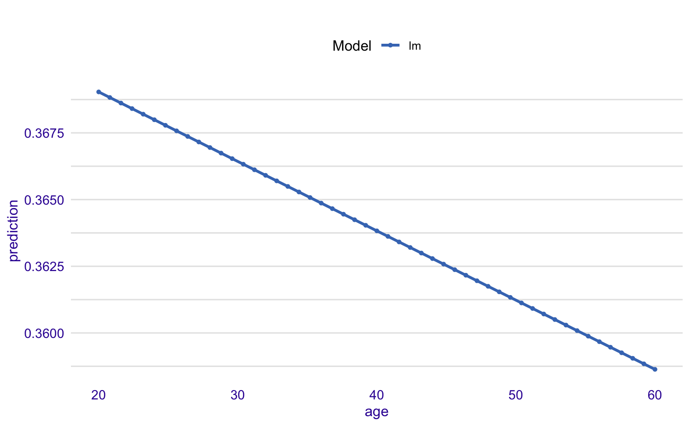
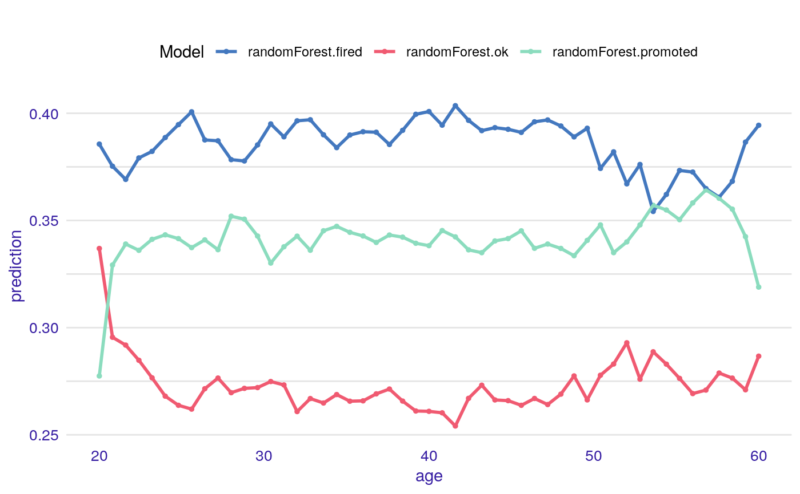
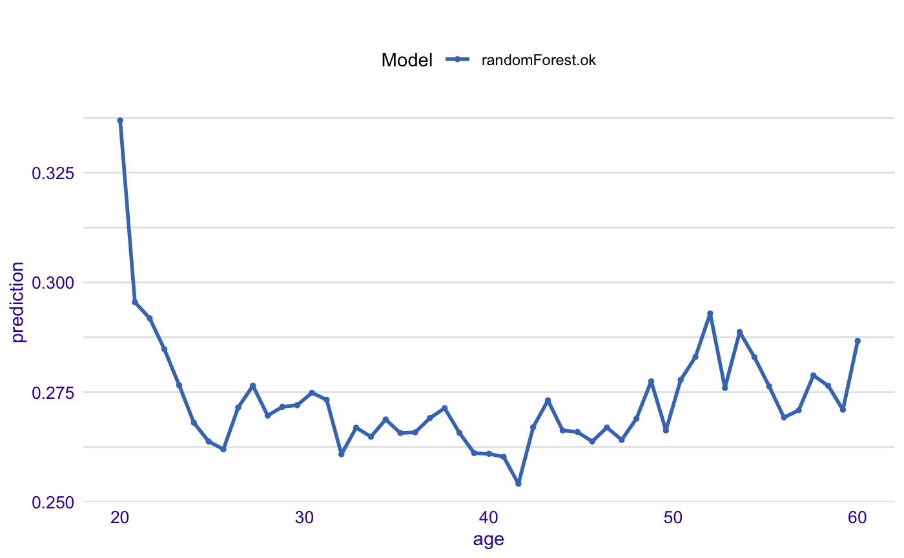

Marginal Response for a Single Feature
Calculates the average model response as a function of a single selected variable. Use the 'type' parameter to select the type of marginal response to be calculated. Currently for numeric variables we have Partial Dependency and Accumulated Local Effects implemented. Current implementation uses the 'pdp' package (Brandon M. Greenwell (2017). pdp: An R Package for Constructing Partial Dependence Plots. The R Journal, 9(1), 421--436.) and 'ALEPlot' (Dan Apley (2017). ALEPlot: Accumulated Local Effects Plots and Partial Dependence Plots.)
feature_response(x, ...) # S3 method for explainer feature_response(x, feature, type = "pdp", which_class = NULL, ...) # S3 method for default feature_response(x, data, predict_function, feature, type = "pdp", label = class(x)[1], which_class = NULL, ...)
Arguments
| x | a model to be explained, or an explainer created with function `DALEX::explain()`. |
|---|---|
| ... | other parameters |
| feature | character - name of a single variable |
| type | character - type of the response to be calculated. Currently following options are implemented: 'pdp' for Partial Dependency and 'ale' for Accumulated Local Effects |
| which_class | character, for multilabel classification you can restrict results to selected classes. By default `NULL` which means that all classes are considered. |
| data | validation dataset, will be extracted from `x` if it's an explainer |
| predict_function | predict function, will be extracted from `x` if it's an explainer |
| label | name of the model. By default it's extracted from the 'class' attribute of the model |
Value
An object of the class 'feature_response_explainer'. It's a data frame with calculated average response.
Details
This function is set deprecated. It is suggested to use partial_dependency, accumulated_dependency instead.
Find information how to use these functions here: https://pbiecek.github.io/PM_VEE/partialDependenceProfiles.html and https://pbiecek.github.io/PM_VEE/accumulatedLocalProfiles.html.
For factor variables we are using the 'factorMerger' package.
Please note that the argument type must be set to 'factor' to use this method.
References
Predictive Models: Visual Exploration, Explanation and Debugging https://pbiecek.github.io/PM_VEE/
Examples
library("DALEX") HR_glm_model <- glm(status == "fired" ~ ., data = HR, family = "binomial") explainer_glm <- explain(HR_glm_model, data = HR) expl_glm <- feature_response(explainer_glm, "age", "pdp")#> Warning: Please note that 'feature_response()' is now deprecated, it is better to use 'ingredients::partial_dependency()' instead. #> Find examples and detailed introduction at: https://pbiecek.github.io/PM_VEE/partialDependenceProfiles.htmlhead(expl_glm)#> x y var type label #> 1 20.00389 0.3690356 age pdp lm #> 2 20.80378 0.3688270 age pdp lm #> 3 21.60368 0.3686184 age pdp lm #> 4 22.40357 0.3684098 age pdp lm #> 5 23.20346 0.3682013 age pdp lm #> 6 24.00336 0.3679928 age pdp lmplot(expl_glm)library("randomForest") HR_rf_model <- randomForest(status ~ ., data = HR, ntree = 100) explainer_rf <- explain(HR_rf_model, data = HR) expl_rf <- feature_response(explainer_rf, feature = "age", type = "pdp") head(expl_rf)#> x y var type label #> 1 20.00389 0.3856225 age pdp randomForest.fired #> 2 20.80378 0.3752899 age pdp randomForest.fired #> 3 21.60368 0.3691487 age pdp randomForest.fired #> 4 22.40357 0.3791678 age pdp randomForest.fired #> 5 23.20346 0.3822212 age pdp randomForest.fired #> 6 24.00336 0.3886785 age pdp randomForest.firedplot(expl_rf)expl_rf <- feature_response(explainer_rf, feature = "age", type = "pdp", which_class = 2) plot(expl_rf)